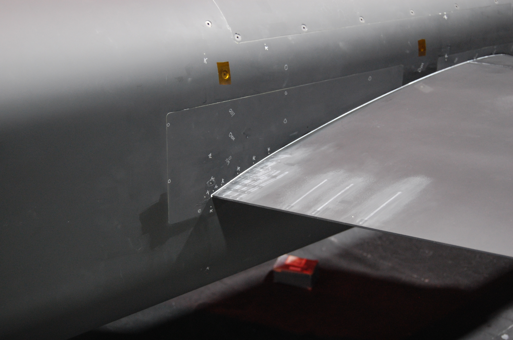
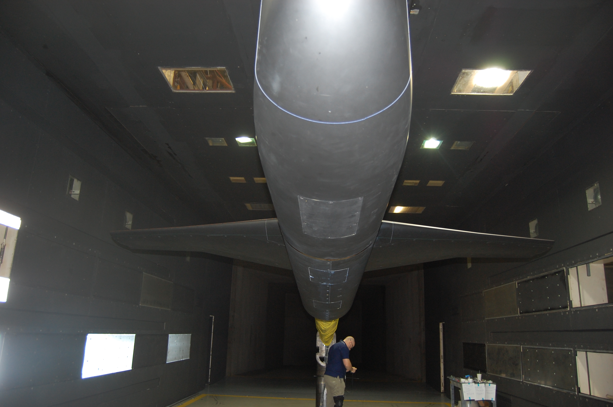
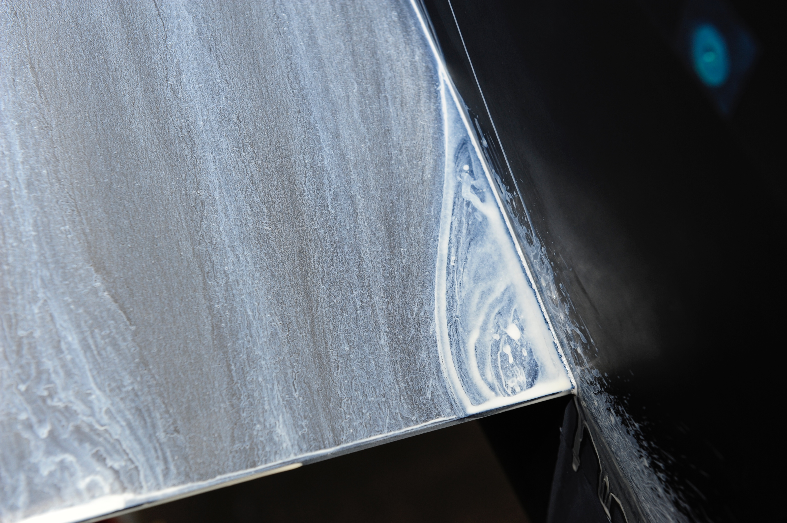
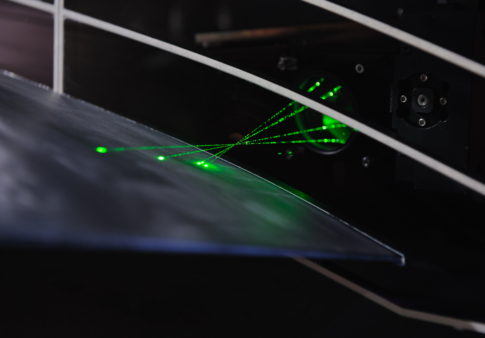
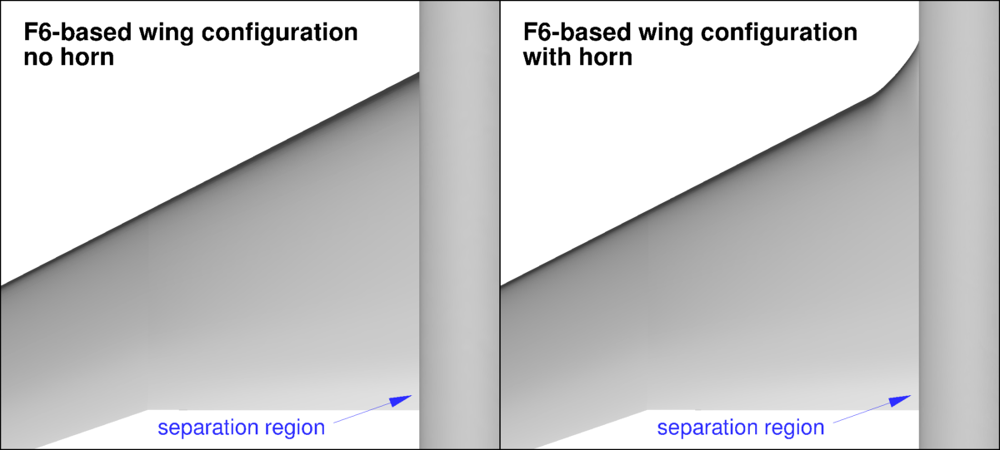

|
Langley Research CenterTurbulence Modeling Resource |
Exp: NASA Juncture Flow (JF) - Turbulent F6-based Wing
Return to: Exp: NASA Juncture Flow - Intro Page
Return to: Data from Experiments - Intro Page Return to: Turbulence Modeling Resource Home PageThis is a sub-page of the
NASA Juncture Flow (JF) website.
The first JF experiments conducted (Phase 1 and 2) were on an F6-based wing.
Details are provided here and on linked sub-pages below.





Some relevant information is given here for Tests
638 (F6-based configuration without horn),
640 (F6-based configuration with horn), and
653 (additional runs with the F6-based configuration with horn). (The flowfield information below
actually comes directly from Test 640, but ranges for the other tests were very similar.)
The interested reader is referred to the JF publications for complete details:
TURBULENT F6-BASED GEOMETRY
TURBULENT F6-BASED BOUNDARY CONDITIONS
TURBULENT F6-BASED EXPERIMENTAL DATA
LINK TO EXISTING TURBULENT F6-BASED CFD GRIDS AND SOLUTIONS
Return to: Exp: NASA Juncture Flow - Intro Page
Recent significant updates: Responsible NASA Official:
Ethan Vogel
05/27/2022 - Made this a new subpage
Page Curator:
Clark Pederson
Last Updated: 05/27/2022